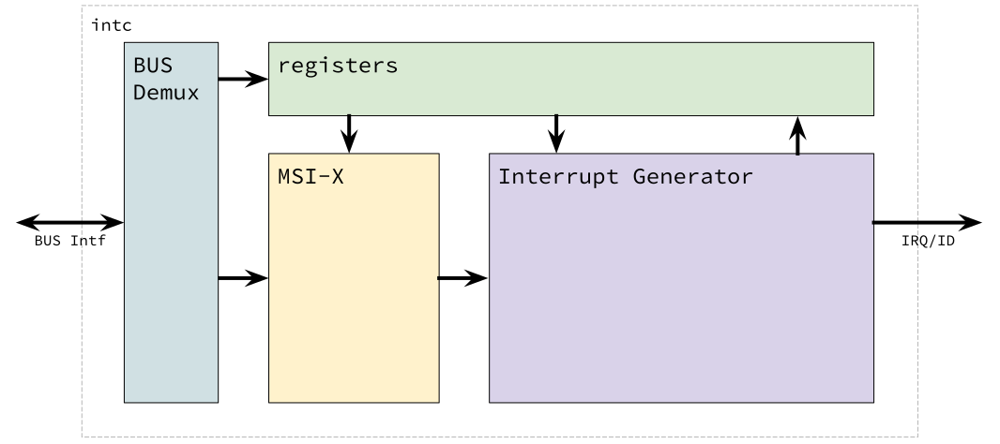
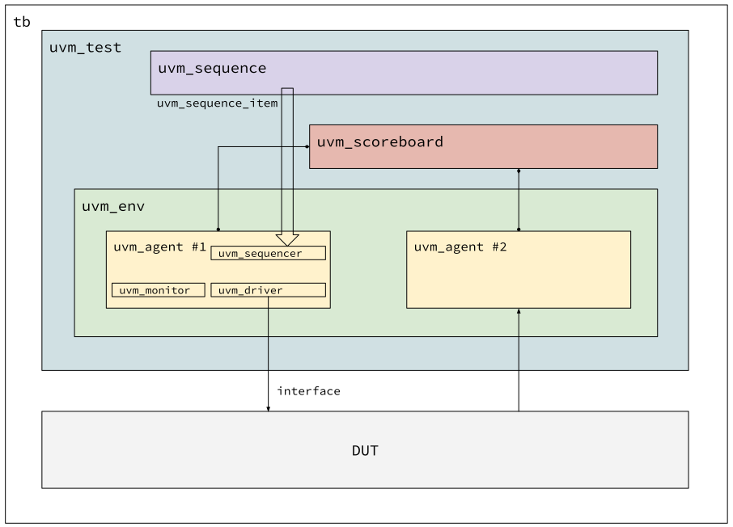

- UVM 개요
- Design Under Test (DUT)
- UVM Test Flow
- UVM Blocks
UVM을 구현해 보기에 앞서서, 앞으로 검증할 하드웨어 모듈에 대한 설명을 먼저 하는게 나을 것 같네요. 어떤 모듈을 하는 게 좋을까 생각을 좀 해보았습니다.
너무 간단한 것을 하면 UVM의 기본은 이해할 수 있으나 실제 검증에서 쓰이기 쉽지 않을 겁니다. 예를 들면 AXI Memory 같은 것은 AXI master agent만 있으면 되어 구현이 쉽지만 실제 써먹기엔 좀 애매하겠죠. 그렇다고 여러 interface를 가지고 있는 복잡한 시스템을 구현하는 것을 목표로 하면 너무 많은 정보에 파묻혀서 핵심을 놓치고 헤매이게 될 수도 있겠더라구요.
그래서 제가 이해한 수준에서 적당히 구현해 볼 수 있는, 1 proactive agent, 1 reactive agent가 있는 모듈을 기반으로 이야기 해 볼까 합니다. Proactive/ Reactive 용어는 다음에 설명할게요.
DUT 구조

이 DUT는 하나의 Bus slave 포트와, 하나의 interrupt output을 가지고 있는 모듈입니다. 특정한 버스 입력이 왔을 때 내부 동작으로 인터럽트가 발생하는 거죠.
이 모듈의 버스는 레지스터 접근을 위한 것이 주된 이유이고, 다른 하나는 버스 트랜잭션으로 인터럽트를 발생할 수 있는 로직도 있습니다. 즉, 버스로 특정 주소에 특정 데이터값을 쓰면 그게 인터럽트 출력으로 나오는 동작을 수행합니다.
레지스터 모듈은 인터럽트 동작을 enable/disable하는 부분과, 어떤 인터럽트가 우선순위가 있는지 정하는 priority 레지스터등이 있다고 가정합니다. 또한, 인터럽트를 받은 모듈 (타겟으로 지칭할게요)이 인터럽트를 claim하고 complete 하는 레지스터 인터페이스도 있습니다.
기본 골격은 RISC-V의 Platform-Level Interrupt Controller 구조를 따왔으나 인터럽트 입력을 단순화하기 위해 Message Signaled Interrupt (MSI) 방법만 지원하는 것을 가정했습니다.
복잡한 용어가 몇개 등장했는데, 이게 검증에 핵심은 아니니, 그저 "테스트할 모듈이 버스 트랜잭션을 받아서 인터럽트를 만들어내는 모듈" 이라고 이해하면 충분할 것 같네요.
[이전 글에서 보여준 검증 환경 구조][uvm-introduction]가 사실 이 모듈에 곧장 적용할 수 있는 구조입니다. 그 그림을 다시 보면,

하나의 화살표는 DUT방향으로 향하고 다른 하나는 DUT에서 uvm_agent #2로 가는
것을 볼 수 있습니다. 위의 하드웨어 모듈에 적용하면 uvm_agent #1의
uvm_driver에서 DUT로 전송되는 화살표는 버스 인터페이스이고 DUT에서 `uvm_agent
2`로 향하는 화살표는 인터럽트 출력 신호겠죠.
Bus Interface
버스는 간략화된 Register Interface라고 가정합시다. AXI protocol이나 TileLink 프로토콜을 설명하는게 이 글의 목적은 아니니까요. 간단하게 버스 신호를 살펴보면, 아래처럼 구현되어 있다고 해봅시다.
module riscv_plic (
input clk,
input rst_n,
// Bus Interface
input m2s_valid,
input [31:0] m2s_address,
input m2s_write,
input [31:0] m2s_data,
output logic m2s_ready,
output logic s2m_valid,
output logic [31:0] s2m_data,
output logic s2m_error,
input s2m_ready,
// ...
);
endmodule
두개의 채널로 되어있고 m2s_ 채널은 request와 write data가 있고, s2m_ 채널은
response와 read data로 이뤄져있습니다. m2s_에서 s2m_ 응답이 한 클럭만에
온다고 생각하면 거의 SRAM 인터페이스라고 봐도 무방합니다.
DUT 모듈이 버스 요청을 처리하기 때문에, uvm_agent #1이 먼저 테스트 순서를
정해서 던져줍니다. uvm_agent가 먼저 시작하므로 이걸 proactive agent라고
부릅니다.
Interrupt Interface
riscv_plic 모듈이 만들어내는 신호는 아래와 같다고 가정해 보겠습니다.
module riscv_plic (
// clk
// Bus Interface
// ...
// Interrupt Interface
output logic irq,
output logic [5:0] irq_id
);
endmodule
DUT에서 요청이 나오고 이에 대한 응답은 없네요. 검증 환경은 IRQ 입력을 받기만 하고 이 이벤트에 따른 처리는 버스 인터페이스를 통해서 처리합니다. 인터럽트가 뜨면 해당 인터럽트를 수행하고 마지막에 인터럽트를 클리어 하는 방식을 생각해 보면 되겠네요.
그래서 이 uvm_agent는 버스 인터페이스에서 동작하는 이전 agent와는 좀 다른
방식입니다. 먼저 DUT가 시작을 하고 그에 따라 agent가 응답을 보내는 방식인데,
이런 agent를 reactive agent라고 부릅니다.
Interface vs wire or struct
DUT의 input/output 포트를 보면 systemverilog의 interface를 사용하지 않았습니다. 인터페이스를 쓸 수는 있겠지만 전 그다지 선호하지는 않아요. 만일 시그널이 너무 많다면 struct를 이용해서 하나로 묶는 것을 선호합니다.
예를 들면 위의 버스 신호는 아래의 struct로 정의 후 선언하겠죠.
typedef struct packed {
logic [31:0] address,
logic write,
logic [31:0] data
} bus_m2s_t;
typedef struct packed {
logic [31:0] data,
logic error
} bus_s2m_t;
module riscv_plic (
// ...
input m2s_valid,
input bus_m2s_t m2s,
output logic m2s_ready,
output logic s2m_valid,
output bus_s2m_t s2m,
input s2m_ready,
//...
);
아무튼 하드웨어 모듈은 이런 방식으로 정의되어 있다고 생각하고, UVM 검증환경에서 쓸 interface를 정의해 봅시다.
Interface는 UVM driver에 DUT의 신호를 연결하기 위해서 필요합니다. 시그널 하나
하나 연결할 수 있겠지만 그보다 전체 묶음을 하나의 interface 로 건네줄 수 있으니
더 간편하죠. 그래서 tb.sv에서 DUT의 시그널 인 아웃 포트를 interface로 묶어줘야
합니다.
일단 위에서 언급한 버스 인터페이스와 인터럽트 인터페이스를 정의해야겠습니다.
interface bus_if (
input clk,
input rst_n
);
logic m2s_valid;
logic [31:0] m2s_address;
logic m2s_write;
logic [31:0] m2s_data;
logic m2s_ready;
logic s2m_valid;
logic [31:0] s2m_data;
logic s2m_error;
logic s2m_ready;
modport tb (
input clk, rst_n,
output m2s_valid, m2s_address, m2s_write, m2s_data, s2m_ready,
input m2s_ready, s2m_valid, s2m_data, s2m_error
);
modport dut (
input clk, rst_n,
input m2s_valid, m2s_address, m2s_write, m2s_data, s2m_ready,
output m2s_ready, s2m_valid, s2m_data, s2m_error
);
endinterface
interface intr_if (
input clk
);
logic irq;
logic [5:0] irq_id;
modport tb ( input clk, irq, irq_id );
modport dut ( input clk, output irq, irq_id );
endinterface
Testbench tb.sv
DUT를 연결 할 준비가 되었으니, 이제 testbench를 만들어 보죠. 지금은 UVM 신경
쓰지 않고 DUT만 인스턴스를 만들어 볼게요. UVM은 사실 tb에서 신경쓸 것은 몇 군데
되지 않아요. uvm_pkg가 알아서 처리해 줍니다.
이게 좀 처음에는 헷갈리더라구요. 명시적인 함수 호출이나 task 호출이 없으니 어디를 쫓아가야 할 지 몰라서 코드를 따라가질 못하겠더군요. 그래서 UVM 구조에 익숙해져야 합니다. 그렇지 않으면 코드만 봐서는 분석이 어려워요. 왜 이렇게 만들어놨는지 저는 아직 설명할 만큼 지식이 많지 않아서 설명을 드리진 못하겠지만, 지금 수박겉핥기 식으로 배운 입장에서는 장점보다 단점이 큰 것 같네요.
module tb ();
logic clk, rst_n;
// clock gen
initial begin
// forever
end
// reset gen
initial begin
rst_n = 1'b0;
#RstPeriod rst_n = 1'b1;
end
bus_if bus(clk, rst_n);
intr_if intr(clk);
// DUT instance
riscv_plic dut (
.clk,
.rst_n,
.m2s_valid (bus.dut.m2s_valid),
.m2s_address (bus.dut.m2s_address),
//...
.s2m_ready (bus.dut.s2m_ready),
.irq (intr.dut.irq),
.irq_id (intr.dut.irq_id)
);
endmodule
자.. 테스트벤치 모듈도 준비되었네요. 아직 uvm_pkg를 import하지는 않아서 그냥
elaboration이 되는지 검사할 정도밖에 안되겠지만 uvm에 뛰어들 준비가 이제
되어갑니다.